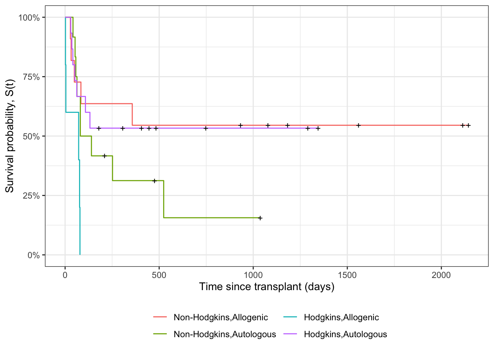
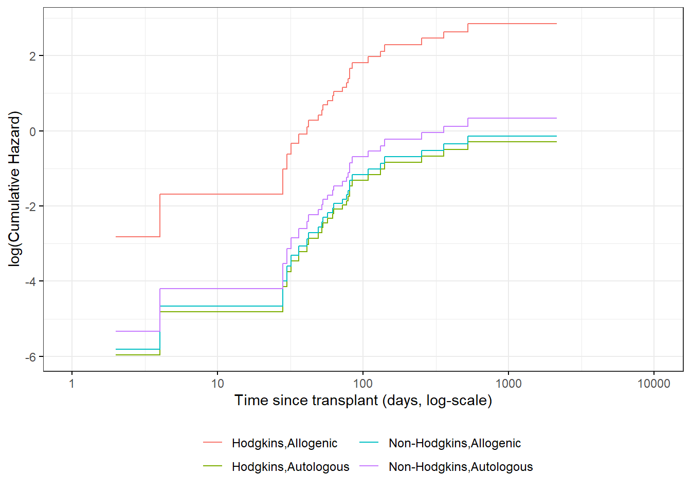
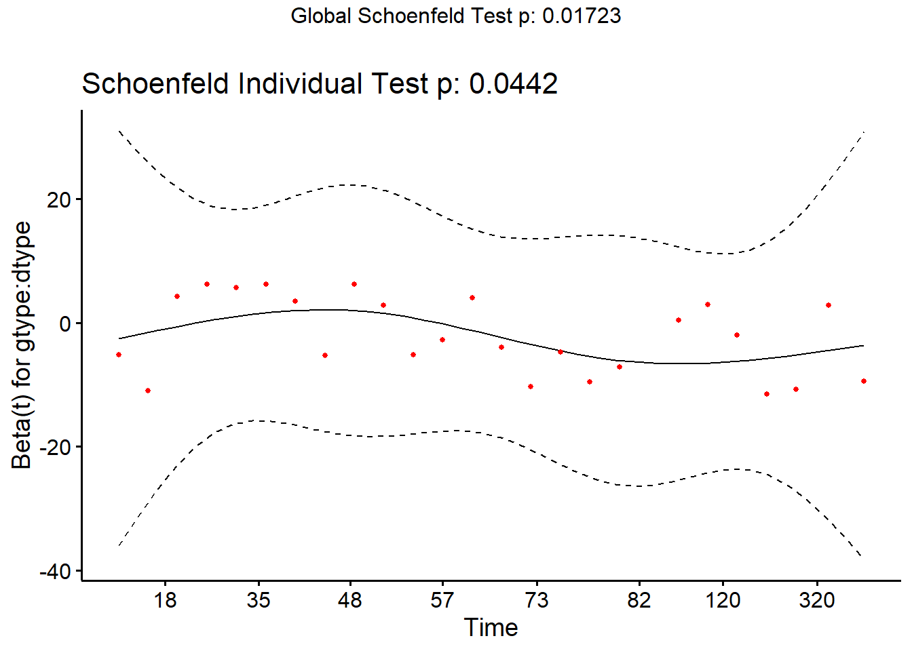
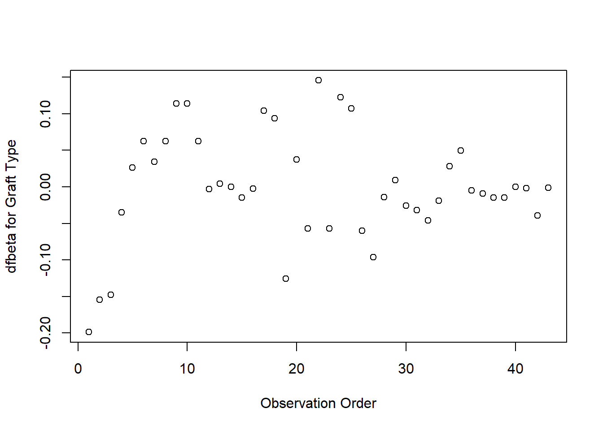
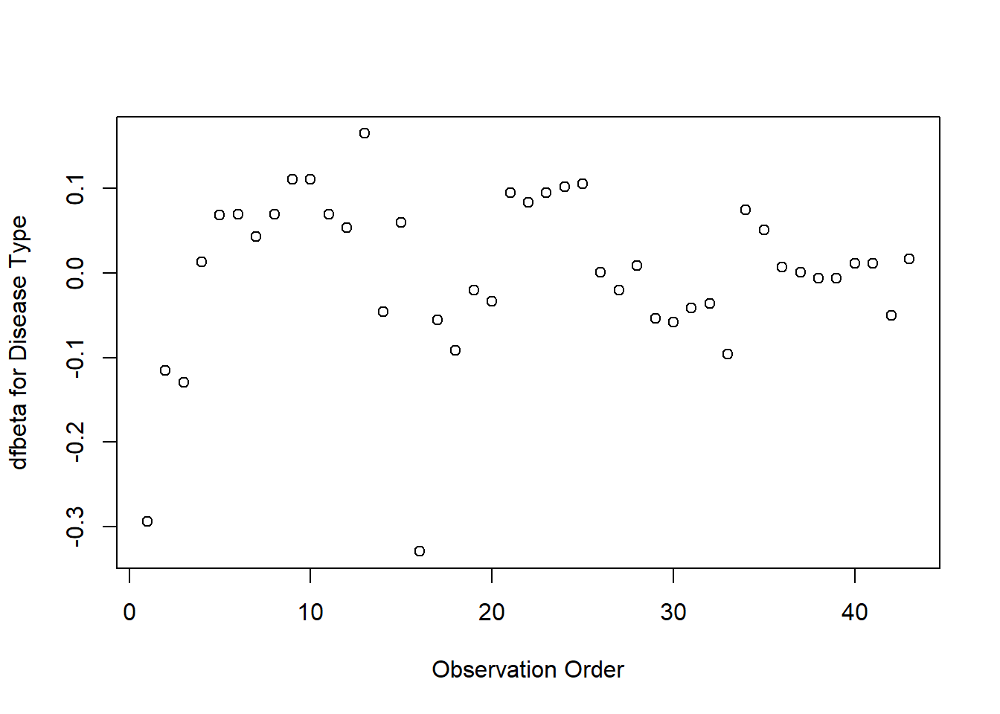
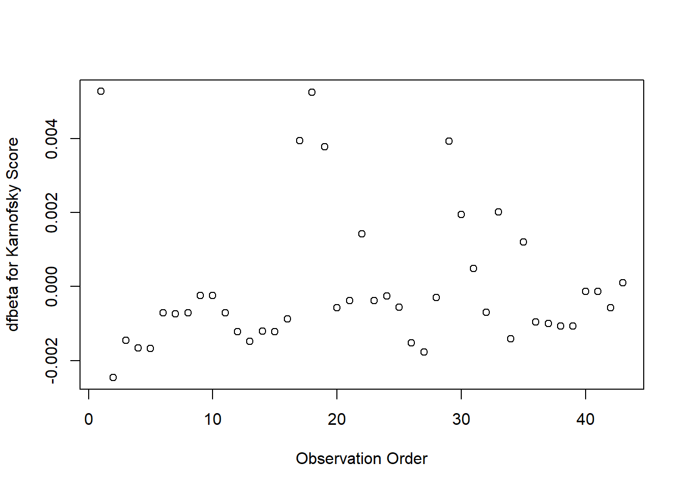
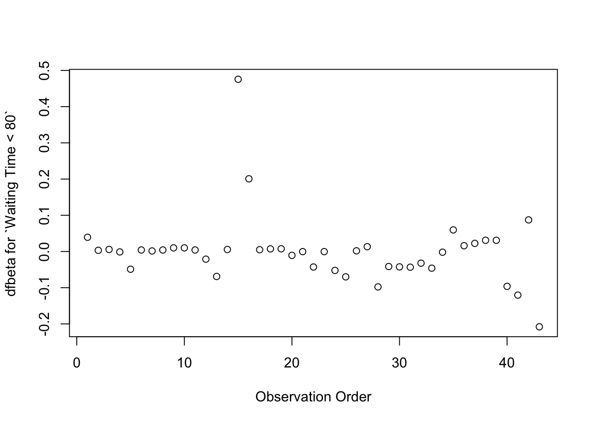
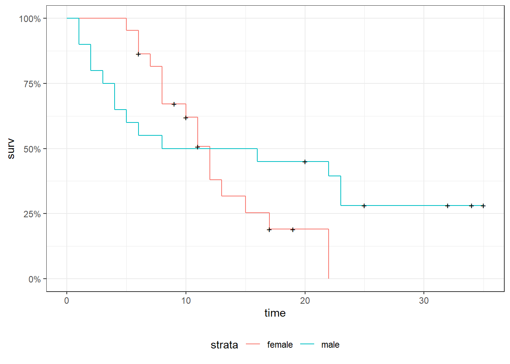

rm(list =ls())# delete any data that's already loaded into Rknitr::opts_chunk$set(message =FALSE)pander::panderOptions("table.emphasize.rownames", FALSE)options('digits'=4)legend_text_size=9
8 Building Cox Proportional Hazards models
8.1hodg Lymphoma Data Set from KMsurv
Participants
43 bone marrow transplant patients at Ohio State University (Avalos 1993)
Variables
dtype: Disease type (Hodgkin’s or non-Hodgkins lymphoma)
gtype: Bone marrow graft type:
allogeneic: from HLA-matched sibling
autologous: from self (prior to chemo)
time: time to study exit
delta: study exit reason (death/relapse vs censored)
wtime: waiting time to transplant (in months)
score: Karnofsky score:
80–100: Able to carry on normal activity and to work; no special care needed.
50–70: Unable to work; able to live at home and care for most personal needs; varying amount of assistance needed.
10–60: Unable to care for self; requires equivalent of institutional or hospital care; disease may be progressing rapidly.
Data
Code
data(hodg, package ="KMsurv")hodg2=hodg|>as_tibble()|>mutate(# We add factor labels to the categorical variables: gtype =gtype|>case_match(1~"Allogenic",2~"Autologous"), dtype =dtype|>case_match(1~"Non-Hodgkins",2~"Hodgkins")|>factor()|>relevel(ref ="Non-Hodgkins"), delta =delta|>case_match(1~"dead",0~"alive"), surv =Surv( time =time, event =delta=="dead"))hodg2|>print()
9 Diagnostic graphs for proportional hazards assumption
9.1 Analysis plan
survival function for the four combinations of disease type and graft type.
observed (nonparametric) vs. expected (semiparametric) survival functions.
complementary log-log survival for the four groups.
9.2 Kaplan-Meier survival functions
Code
km_model=survfit( formula =surv~dtype+gtype, data =hodg2)km_model|>autoplot(conf.int =FALSE)+theme_bw()+theme( legend.position="bottom", legend.title =element_blank(), legend.text =element_text(size =legend_text_size))+guides(col=guide_legend(ncol=2))+ylab('Survival probability, S(t)')+xlab("Time since transplant (days)")
Kaplan-Meier Survival Curves for HOD/NHL and Allo/Auto Grafts

9.3 Observed and expected survival curves
Code
# we need to create a tibble of covariate patterns;# we will set score and wtime to mean values for disease and graft types:means=hodg2|>summarize( .by =c(dtype, gtype), score =mean(score), wtime =mean(wtime))|>arrange(dtype, gtype)|>mutate(strata =paste(dtype, gtype, sep =","))|>as.data.frame()# survfit.coxph() will use the rownames of its `newdata`# argument to label its output:rownames(means)=means$stratacox_model=hodg.cox1|>survfit( data =hodg2, # ggsurvplot() will need this newdata =means)
Code
# I couldn't find a good function to reformat `cox_model` for ggplot, # so I made my own:stack_surv_ph=function(cox_model){cox_model$surv|>as_tibble()|>mutate(time =cox_model$time)|>pivot_longer( cols =-time, names_to ="strata", values_to ="surv")|>mutate( cumhaz =-log(surv), model ="Cox PH")}km_and_cph=km_model|>fortify(surv.connect =TRUE)|>mutate( strata =trimws(strata), model ="Kaplan-Meier", cumhaz =-log(surv))|>bind_rows(stack_surv_ph(cox_model))
na_and_cph=na_model|>fortify(fun ="cumhaz")|># `fortify.survfit()` doesn't name cumhaz correctly:rename(cumhaz =surv)|>mutate( surv =exp(-cumhaz), strata =trimws(strata))|>mutate(model ="Nelson-Aalen")|>bind_rows(stack_surv_ph(cox_model))na_and_cph|>ggplot(aes( x =time, y =cumhaz, col =model))+geom_step()+facet_wrap(~strata)+theme_bw()+scale_y_continuous( trans ="log10", name ="Cumulative hazard H(t) (log-scale)")+scale_x_continuous( trans ="log10", name ="Survival time (t, days, log-scale)")+theme(legend.position ="bottom")
Observed and expected cumulative hazard curves for bmt data (cloglog format)

10 Predictions and Residuals
10.1 Review: Predictions in Linear Regression
In linear regression, we have a linear predictor for each data point \(i\)
\(\hat y_i\) estimates the conditional mean of \(y_i\) given the covariate values \(\tilde x_i\). This together with the prediction error says that we are predicting the distribution of values of \(y\).
10.2 Review: Residuals in Linear Regression
The usual residual is \(r_i=y_i-\hat y_i\), the difference between the actual value of \(y\) and a prediction of its mean.
The residuals are also the quantities the sum of whose squares is being minimized by the least squares/MLE estimation.
10.3 Predictions and Residuals in survival models
In survival analysis, the equivalent of \(y_i\) is the event time \(t_i\), which is unknown for the censored observations.
The expected event time can be tricky to calculate:
The nature of time-to-event data results in very wide prediction intervals:
Suppose a cancer patient is predicted to have a mean lifetime of 5 years after diagnosis and suppose the distribution is exponential.
If we want a 95% interval for survival, the lower end is at the 0.025 percentage point of the exponential which is qexp(.025, rate = 1/5) = 0.1266 years, or 1/40 of the mean lifetime.
The upper end is at the 0.975 point which is qexp(.975, rate = 1/5) = 18.4444 years, or 3.7 times the mean lifetime.
Saying that the survival time is somewhere between 6 weeks and 18 years does not seem very useful, but it may be the best we can do.
For survival analysis, something is like a residual if it is small when the model is accurate or if the accumulation of them is in some way minimized by the estimation algorithm, but there is no exact equivalence to linear regression residuals.
And if there is, they are mostly quite large!
10.5 Types of Residuals in Time-to-Event Models
It is often hard to make a decision from graph appearances, though the process can reveal much.
Some diagnostic tests are based on residuals as with other regression methods:
Schoenfeld residuals (via cox.zph) for proportionality.
Cox-Snell residuals for goodness of fit.
martingale residuals for non-linearity.
dfbeta for influence.
10.6 Schoenfeld residuals
There is a Schoenfeld residual for each subject \(i\) with an event (not censored) and for each predictor \(x_{k}\).
At the event time \(t\) for that subject, there is a risk set \(R\), and each subject \(j\) in the risk set has a risk coefficient \(\theta_j\) and also a value \(x_{jk}\) of the predictor.
The Schoenfeld residual is the difference between \(x_{ik}\) and the risk-weighted average of all the \(x_{jk}\) over the risk set.
This residual measures how typical the individual subject is with respect to the covariate at the time of the event. Since subjects should fail more or less uniformly according to risk, the Schoenfeld residuals should be approximately level over time, not increasing or decreasing.
We can test this with the correlation with time on some scale, which could be the time itself, the log time, or the rank in the set of failure times.
The default is to use the KM curve as a transform, which is similar to the rank but deals better with censoring.
The cox.zph() function implements a score test proposed by Grambsch and Therneau1:
From the correlation test, the Karnofsky score and the interaction with graft type disease type induce modest but statistically significant non-proportionality.
The sample size here is relatively small (26 events in 43 subjects). If the sample size is large, very small amounts of non-proportionality can induce a significant result.
As time goes on, autologous grafts are over-represented at their own event times, but those from HOD patients become less represented.
Both the statistical tests and the plots are useful.
11 Goodness of Fit using the Cox-Snell Residuals
(references: Klein & Moeschberger textbook, §11.2, and Dobson & Barnett textbook, §10.6)
Suppose that an individual has a survival time \(T\) which has survival function \(S(t)\), meaning that \(\Pr(T> t) = S(t)\). Then \(S(T)\) has a uniform distribution on \((0,1)\).
should have an exponential distribution with constant hazard \(\lambda=1\) if the estimate \(\hat S_i\) is accurate, which means that these values should look like a censored sample from this exponential distribution. These values are called generalized residuals or Cox-Snell residuals.
Code
hodg2=hodg2|>mutate(cs =predict(hodg.cox1, type ="expected"))surv.csr=survfit( data =hodg2, formula =Surv(time =cs, event =delta=="dead")~1, type ="fleming-harrington")autoplot(surv.csr, fun ="cumhaz")+geom_abline(aes(intercept =0, slope =1), col ="red")+theme_bw()
Cumulative Hazard of Cox-Snell Residuals

The line with slope 1 and intercept 0 fits the curve relatively well, so we don’t see lack of fit using this procedure.
12 Martingale Residuals
The martingale residuals are a slight modification of the Cox-Snell residuals. If the censoring indicator is \(\delta_i\), then \[r^M_i=\delta_i-r^{CS}_i\] These residuals can be interpreted as an estimate of the excess number of events seen in the data but not predicted by the model. We will use these to examine the functional forms of continuous covariates.
12.1 Using Martingale Residuals
Martingale residuals can be used to examine the functional form of a numeric variable.
We fit the model without that variable and compute the martingale residuals.
We then plot these martingale residuals against the values of the variable.
We can see curvature, or a possible suggestion that the variable can be discretized.
Let’s use this to examine the score and wtime variables in the wtime data set.
13 Checking for Outliers and Influential Observations
We will check for outliers using the deviance residuals. The martingale residuals show excess events or the opposite, but highly skewed, with the maximum possible value being 1, but the smallest value can be very large negative. Martingale residuals can detect unexpectedly long-lived patients, but patients who die unexpectedly early show up only in the deviance residual. Influence will be examined using dfbeta in a similar way to linear regression, logistic regression, or Poisson regression.
The two largest deviance residuals are observations 1 and 29. Worth examining.
13.3 dfbeta
dfbeta is the approximate change in the coefficient vector if that observation were dropped
dfbetas is the approximate change in the coefficients, scaled by the standard error for the coefficients.
Graft type
Code
plot(hodg.dfb[,1],xlab="Observation Order",ylab="dfbeta for Graft Type")
dfbeta Values by Observation Order for Graft Type
The smallest dfbeta for graft type is observation 1.
Disease type
Code
plot(hodg.dfb[,2], xlab="Observation Order", ylab="dfbeta for Disease Type")
dfbeta Values by Observation Order for Disease Type

The smallest two dfbeta values for disease type are observations 1 and 16.
Karnofsky score
Code
plot(hodg.dfb[,3], xlab="Observation Order", ylab="dfbeta for Karnofsky Score")
dfbeta Values by Observation Order for Karnofsky Score

The two highest dfbeta values for score are observations 1 and 18. The next three are observations 17, 29, and 19. The smallest value is observation 2.
Waiting time (dichotomized)
Code
plot(hodg.dfb[,4], xlab="Observation Order", ylab="dfbeta for `Waiting Time < 80`")
dfbeta Values by Observation Order for Waiting Time (dichotomized)

The two large values of dfbeta for dichotomized waiting time are observations 15 and 16. This may have to do with the discretization of waiting time.
Interaction: graft type and disease type
Code
plot(hodg.dfb[,5], xlab="Observation Order", ylab="dfbeta for dtype:gtype")
dfbeta Values by Observation Order for dtype:gtype

The two largest values are observations 1 and 16. The smallest value is observation 35.
13.4
Observations to Examine by Residuals and Influence
Diagnostic
Observations to Examine
Martingale Residuals
1, 29, 18
Deviance Residuals
1, 29
Graft Type Influence
1
Disease Type Influence
1, 16
Karnofsky Score Influence
1, 18 (17, 29, 19)
Waiting Time Influence
15, 16
Graft by Disease Influence
1, 16, 35
The most important observations to examine seem to be 1, 15, 16, 18, and 29.
Min. 1st Qu. Median Mean 3rd Qu. Max.
20.0 60.0 80.0 76.3 90.0 100.0
Code
hodg.cox2
Call:
coxph(formula = Surv(time, event = delta == "dead") ~ gtype *
dtype + score + wt2, data = hodg2)
coef exp(coef) se(coef) z p
gtypeAutologous 0.67 1.94 0.59 1 0.263
dtypeHodgkins 2.33 10.25 0.73 3 0.002
score -0.06 0.95 0.01 -4 8e-06
wt2long -2.06 0.13 1.05 -2 0.050
gtypeAutologous:dtypeHodgkins -2.07 0.13 0.93 -2 0.026
Likelihood ratio test=35 on 5 df, p=1e-06
n= 43, number of events= 26
Code
hodg2[c(1,15,16,18,29),]|>select(gtype, dtype, time, delta, score, wtime)|>mutate( comment =c("early death, good score, low risk","high risk grp, long wait, poor score","high risk grp, short wait, poor score","early death, good score, med risk grp","early death, good score, med risk grp"))
# A tibble: 5 × 7
gtype dtype time delta score wtime comment
<chr> <fct> <int> <chr> <int> <int> <chr>
1 Allogenic Non-Hodgkins 28 dead 90 24 early death, good score, low …
2 Allogenic Hodgkins 77 dead 60 102 high risk grp, long wait, poo…
3 Allogenic Hodgkins 79 dead 70 71 high risk grp, short wait, po…
4 Autologous Non-Hodgkins 53 dead 90 17 early death, good score, med …
5 Autologous Hodgkins 30 dead 90 73 early death, good score, med …
13.6 Action Items
Unusual points may need checking, particularly if the data are not completely cleaned. In this case, observations 15 and 16 may show some trouble with the dichotomization of waiting time, but it still may be useful.
The two largest residuals seem to be due to unexpectedly early deaths, but unfortunately this can occur.
If hazards don’t look proportional, then we may need to use strata, between which the base hazards are permitted to be different. For this problem, the natural strata are the two diseases, because they could need to be managed differently anyway.
A main point that we want to be sure of is the relative risk difference by disease type and graft type.
For Non-Hodgkin’s, the allogenic graft is better. For Hodgkin’s, the autologous graft is much better.
14 Stratified survival models
14.1 Revisiting the leukemia dataset (anderson)
We will analyze remission survival times on 42 leukemia patients, half on new treatment, half on standard treatment.
This is the same data as the drug6mp data from KMsurv, but with two other variables and without the pairing. This version comes from the Kleinbaum and Klein survival textbook (e.g., p281):
Code
anderson=paste0("http://web1.sph.emory.edu/dkleinb/allDatasets/","surv2datasets/anderson.dta")|>haven::read_dta()|>mutate( status =status|>case_match(1~"relapse",0~"censored"), sex =sex|>case_match(0~"female",1~"male")|>factor()|>relevel(ref ="female"), rx =rx|>case_match(0~"new",1~"standard")|>factor()|>relevel(ref ="standard"), surv =Surv( time =survt, event =(status=="relapse")))print(anderson)
# A tibble: 42 × 7
survt status sex logwbc rx lwbc3 surv
<dbl> <chr> <fct> <dbl> <fct> <dbl> <Surv>
1 35 censored male 1.45 new 1 35+
2 34 censored male 1.47 new 1 34+
3 32 censored male 2.2 new 1 32+
4 32 censored male 2.53 new 2 32+
5 25 censored male 1.78 new 1 25+
6 23 relapse male 2.57 new 2 23
7 22 relapse male 2.32 new 2 22
8 20 censored male 2.01 new 1 20+
9 19 censored female 2.05 new 1 19+
10 17 censored female 2.16 new 1 17+
# ℹ 32 more rows
14.2 Cox semi-parametric proportional hazards model
Code
anderson.cox1=coxph( formula =surv~rx+sex+logwbc, data =anderson)summary(anderson.cox1)
chisq df p
rx 0.036 1 0.85
sex 5.420 1 0.02
logwbc 0.142 1 0.71
GLOBAL 5.879 3 0.12
Graph the K-M survival curves
Code
anderson_km_model=survfit( formula =surv~sex, data =anderson)anderson_km_model|>autoplot(conf.int =FALSE)+theme_bw()+theme(legend.position="bottom")
The survival curves cross, which indicates a problem in the proportionality assumption by sex.
14.3 Graph the Nelson-Aalen cumulative hazard
We can also look at the log-hazard (“cloglog survival”) plots:
Code
anderson_na_model=survfit( formula =surv~sex, data =anderson, type ="fleming")anderson_na_model|>autoplot( fun ="cumhaz", conf.int =FALSE)+theme_classic()+theme(legend.position="bottom")+ylab("log(Cumulative Hazard)")+scale_y_continuous( trans ="log10", name ="Cumulative hazard (H(t), log scale)")+scale_x_continuous( breaks =c(1,2,5,10,20,50), trans ="log")
Scale for y is already present.
Adding another scale for y, which will replace the existing scale.
Warning: Transformation introduced infinite values in continuous y-axis
Warning: Transformation introduced infinite values in continuous x-axis
Cumulative hazard (cloglog scale) for anderson data

This can be fixed by using strata or possibly by other model alterations.
14.4 The Stratified Cox Model
In a stratified Cox model, each stratum, defined by one or more factors, has its own base survival function \(h_0(t)\).
But the coefficients for each variable not used in the strata definitions are assumed to be the same across strata.
To check if this assumption is reasonable one can include interactions with strata and see if they are significant (this may generate a warning and NA lines but these can be ignored).
Since the sex variable shows possible non-proportionality, we try stratifying on sex.
Code
anderson.coxph.strat=coxph( formula =surv~rx+logwbc+strata(sex), data =anderson)summary(anderson.coxph.strat)
Call:
coxph(formula = surv ~ rx + logwbc + strata(sex), data = anderson)
n= 42, number of events= 30
coef exp(coef) se(coef) z Pr(>|z|)
rxnew -0.998 0.369 0.474 -2.11 0.035 *
logwbc 1.454 4.279 0.344 4.22 2.4e-05 ***
---
Signif. codes: 0 '***' 0.001 '**' 0.01 '*' 0.05 '.' 0.1 ' ' 1
exp(coef) exp(-coef) lower .95 upper .95
rxnew 0.369 2.713 0.146 0.932
logwbc 4.279 0.234 2.180 8.398
Concordance= 0.812 (se = 0.059 )
Likelihood ratio test= 32.1 on 2 df, p=1e-07
Wald test = 22.8 on 2 df, p=1e-05
Score (logrank) test = 30.8 on 2 df, p=2e-07
Let’s compare this to a model fit only on the subset of males:
Code
anderson.coxph.male=coxph( formula =surv~rx+logwbc, subset =sex=="male", data =anderson)summary(anderson.coxph.male)
Call:
coxph(formula = surv ~ rx + logwbc, data = anderson, subset = sex ==
"male")
n= 20, number of events= 14
coef exp(coef) se(coef) z Pr(>|z|)
rxnew -1.978 0.138 0.739 -2.68 0.0075 **
logwbc 1.743 5.713 0.536 3.25 0.0011 **
---
Signif. codes: 0 '***' 0.001 '**' 0.01 '*' 0.05 '.' 0.1 ' ' 1
exp(coef) exp(-coef) lower .95 upper .95
rxnew 0.138 7.227 0.0325 0.589
logwbc 5.713 0.175 1.9991 16.328
Concordance= 0.905 (se = 0.043 )
Likelihood ratio test= 29.2 on 2 df, p=5e-07
Wald test = 15.3 on 2 df, p=5e-04
Score (logrank) test = 26.4 on 2 df, p=2e-06
Code
anderson.coxph.female=coxph( formula =surv~rx+logwbc, subset =sex=="female", data =anderson)summary(anderson.coxph.female)
Call:
coxph(formula = surv ~ rx + logwbc, data = anderson, subset = sex ==
"female")
n= 22, number of events= 16
coef exp(coef) se(coef) z Pr(>|z|)
rxnew -0.311 0.733 0.564 -0.55 0.581
logwbc 1.206 3.341 0.503 2.40 0.017 *
---
Signif. codes: 0 '***' 0.001 '**' 0.01 '*' 0.05 '.' 0.1 ' ' 1
exp(coef) exp(-coef) lower .95 upper .95
rxnew 0.733 1.365 0.243 2.21
logwbc 3.341 0.299 1.245 8.96
Concordance= 0.692 (se = 0.085 )
Likelihood ratio test= 6.65 on 2 df, p=0.04
Wald test = 6.36 on 2 df, p=0.04
Score (logrank) test = 6.74 on 2 df, p=0.03
The coefficients of treatment look different. Are they statistically different?
Code
anderson.coxph.strat.intxn=coxph( formula =surv~strata(sex)*(rx+logwbc), data =anderson)anderson.coxph.strat.intxn|>summary()
Analysis of Deviance Table
Cox model: response is surv
Model 1: ~ strata(sex) * (rx + logwbc)
Model 2: ~ rx + logwbc + strata(sex)
loglik Chisq Df Pr(>|Chi|)
1 -53.9
2 -55.7 3.77 2 0.15
We don’t have enough evidence to tell the difference between these two models.
14.5 Conclusions
We chose to use a stratified model because of the apparent non-proportionality of the hazard for the sex variable.
When we fit interactions with the strata variable, we did not get an improved model (via the likelihood ratio test).
So we use the stratifed model with coefficients that are the same across strata.
14.6 Another Modeling Approach
We used an additive model without interactions and saw that we might need to stratify by sex.
Instead, we could try to improve the model’s functional form - maybe the interaction of treatment and sex is real, and after fitting that we might not need separate hazard functions.
Either approach may work.
Code
anderson.coxph.intxn=coxph( formula =surv~(rx+logwbc)*sex, data =anderson)anderson.coxph.intxn|>summary()
This dataset comes from the Copelan et al. (1991) study of allogenic bone marrow transplant therapy for acute myeloid leukemia (AML) and acute lymphoblastic leukemia (ALL).
Outcomes (endpoints)
The main endpoint is disease-free survival (t2 and d3) for the three risk groups, “ALL”, “AML Low Risk”, and “AML High Risk”.
Possible intermediate events
graft vs. host disease (GVHD), an immunological rejection response to the transplant (bad)
acute (AGVHD)
chronic (CGVHD)
platelet recovery, a return of platelet count to normal levels (good)
One or the other, both in either order, or neither may occur.
Covariates
We are interested in possibly using the covariates z1-z10 to adjust for other factors.
In addition, the time-varying covariates for acute GVHD, chronic GVHD, and platelet recovery may be useful.
Preprocessing
We add reformat the data before analysis:
Code
# reformat the data:bmt1=bmt|>as_tibble()|>mutate( id =1:n(), # will be used to connect multiple records for the same individual group =group|>case_match(1~"ALL",2~"Low Risk AML",3~"High Risk AML")|>factor(levels =c("ALL", "Low Risk AML", "High Risk AML")), `patient age` =z1, `donor age` =z2, `patient sex` =z3|>case_match(0~"Female",1~"Male"), `donor sex` =z4|>case_match(0~"Female",1~"Male"), `Patient CMV Status` =z5|>case_match(0~"CMV Negative",1~"CMV Positive"), `Donor CMV Status` =z6|>case_match(0~"CMV Negative",1~"CMV Positive"), `Waiting Time to Transplant` =z7, FAB =z8|>case_match(1~"Grade 4 Or 5 (AML only)",0~"Other")|>factor()|>relevel(ref ="Other"), hospital =z9|># `z9` is hospitalcase_match(1~"Ohio State University",2~"Alferd",3~"St. Vincent",4~"Hahnemann")|>factor()|>relevel(ref ="Ohio State University"), MTX =(z10==1)# a prophylatic treatment for GVHD)|>select(-(z1:z10))# don't need these anymorebmt1|>select(group, id:MTX)|>print(n =10)
# A tibble: 137 × 12
group id `patient age` `donor age` `patient sex` `donor sex`
<fct> <int> <int> <int> <chr> <chr>
1 ALL 1 26 33 Male Female
2 ALL 2 21 37 Male Male
3 ALL 3 26 35 Male Male
4 ALL 4 17 21 Female Male
5 ALL 5 32 36 Male Male
6 ALL 6 22 31 Male Male
7 ALL 7 20 17 Male Female
8 ALL 8 22 24 Male Female
9 ALL 9 18 21 Female Male
10 ALL 10 24 40 Male Male
# ℹ 127 more rows
# ℹ 6 more variables: `Patient CMV Status` <chr>, `Donor CMV Status` <chr>,
# `Waiting Time to Transplant` <int>, FAB <fct>, hospital <fct>, MTX <lgl>
15.2 Time-Dependent Covariates
A time-dependent covariate (“TDC”) is a covariate whose value changes during the course of the study.
For variables like age that change in a linear manner with time, we can just use the value at the start.
But it may be plausible that when and if GVHD occurs, the risk of relapse or death increases, and when and if platelet recovery occurs, the risk decreases.
15.3 Analysis in R
We form a variable precovery which is = 0 before platelet recovery and is = 1 after platelet recovery, if it occurs.
For each subject where platelet recovery occurs, we set up multiple records (lines in the data frame); for example one from t = 0 to the time of platelet recovery, and one from that time to relapse, recovery, or death.
We do the same for acute GVHD and chronic GVHD.
For each record, the covariates are constant.
Code
bmt2=bmt1|>#set up new long-format data set:tmerge(bmt1, id =id, tstop =t2)|># the following three steps can be in any order, # and will still produce the same result:#add aghvd as tdc:tmerge(bmt1, id =id, agvhd =tdc(ta))|>#add cghvd as tdc:tmerge(bmt1, id =id, cgvhd =tdc(tc))|>#add platelet recovery as tdc:tmerge(bmt1, id =id, precovery =tdc(tp))bmt2=bmt2|>as_tibble()|>mutate(status =as.numeric((tstop==t2)&d3))# status only = 1 if at end of t2 and not censored
Let’s see how we’ve rearranged the first row of the data:
Code
bmt1|>filter(id==1)|>select(id, t1, d1, t2, d2, d3, ta, da, tc, dc, tp, dp)
# A tibble: 1 × 12
id t1 d1 t2 d2 d3 ta da tc dc tp dp
<int> <int> <int> <int> <int> <int> <int> <int> <int> <int> <int> <int>
1 1 2081 0 2081 0 0 67 1 121 1 13 1
The event times for this individual are:
t = 0 time of transplant
tp = 13 platelet recovery
ta = 67 acute GVHD onset
tc = 121 chronic GVHD onset
t2 = 2081 end of study, patient not relapsed or dead
After converting the data to long-format, we have:
Note that status could have been 1 on the last row, indicating that relapse or death occurred; since it is false, the participant must have exited the study without experiencing relapse or death (i.e., they were censored).
15.4 Event sequences
Let:
A = acute GVHD
C = chronic GVHD
P = platelet recovery
Each of the eight possible combinations of A or not-A, with C or not-C, with P or not-P occurs in this data set.
A always occurs before C, and P always occurs before C, if both occur.
Thus there are ten event sequences in the data set: None, A, C, P, AC, AP, PA, PC, APC, and PAC.
In general, there could be as many as \(1+3+(3)(2)+6=16\) sequences, but our domain knowledge tells us that some are missing: CA, CP, CAP, CPA, PCA, PC, PAC
Different subjects could have 1, 2, 3, or 4 intervals, depending on which of acute GVHD, chronic GVHD, and/or platelet recovery occurred.
The final interval for any subject has status = 1 if the subject relapsed or died at that time; otherwise status = 0.
Any earlier intervals have status = 0.
Even though there might be multiple lines per ID in the dataset, there is never more than one event, so no alterations need be made in the estimation procedures or in the interpretation of the output.
The function tmerge in the survival package eases the process of constructing the new long-format dataset.
15.5 Model with Time-Fixed Covariates
Code
bmt1=bmt1|>mutate(surv =Surv(t2,d3))bmt_coxph_TF=coxph( formula =surv~group+`patient age`*`donor age`+FAB, data =bmt1)summary(bmt_coxph_TF)
Neither acute GVHD (agvhd) nor chronic GVHD (cgvhd) has a statistically significant effect here, nor are they significant in models with the other one removed.
Sometimes an appropriate analysis requires consideration of recurrent events.
A patient with arthritis may have more than one flareup. The same is true of many recurring-remitting diseases.
In this case, we have more than one line in the data frame, but each line may have an event.
We have to use a “robust” variance estimator to account for correlation of time-to-events within a patient.
16.1 Bladder Cancer Data Set
The bladder cancer dataset from Kleinbaum and Klein contains recurrent event outcome information for eighty-six cancer patients followed for the recurrence of bladder cancer tumor after transurethral surgical excision (Byar and Green 1980). The exposure of interest is the effect of the drug treatment of thiotepa. Control variables are the initial number and initial size of tumors. The data layout is suitable for a counting processes approach.
This drug is still a possible choice for some patients. Another therapeutic choice is Bacillus Calmette-Guerin (BCG), a live bacterium related to cow tuberculosis.
Data dictionary
Variables in the bladder dataset
Variable
Definition
id
Patient unique ID
status
for each time interval: 1 = recurred, 0 = censored
interval
1 = first recurrence, etc.
intime
`tstop - tstart (all times in months)
tstart
start of interval
tstop
end of interval
tx
treatment code, 1 = thiotepa
num
number of initial tumors
size
size of initial tumors (cm)
There are 85 patients and 190 lines in the dataset, meaning that many patients have more than one line.
Patient 1 with 0 observation time was removed.
Of the 85 patients, 47 had at least one recurrence and 38 had none.
18 patients had exactly one recurrence.
There were up to 4 recurrences in a patient.
Of the 190 intervals, 112 terminated with a recurrence and 78 were censored.
Different intervals for the same patient are correlated.
Is the effective sample size 47 or 112? This might narrow confidence intervals by as much as a factor of \(\sqrt{112/47}=1.54\)
What happens if I have 5 treatment and 5 control values and want to do a t-test and I then duplicate the 10 values as if the sample size was 20? This falsely narrows confidence intervals by a factor of \(\sqrt{2}=1.41\).
Code
bladder=paste0("http://web1.sph.emory.edu/dkleinb/allDatasets","/surv2datasets/bladder.dta")|>read_dta()|>as_tibble()bladder=bladder[-1,]#remove subject with 0 observation timeprint(bladder)
bladder=bladder|>mutate( surv =Surv( time=start, time2=stop, event=event, type="counting"))bladder.cox1=coxph( formula =surv~tx+num+size, data =bladder)#results with biased variance-covariance matrix:summary(bladder.cox1)
Call:
coxph(formula = surv ~ tx + num + size, data = bladder)
n= 190, number of events= 112
coef exp(coef) se(coef) z Pr(>|z|)
tx -0.4116 0.6626 0.1999 -2.06 0.03947 *
num 0.1637 1.1778 0.0478 3.43 0.00061 ***
size -0.0411 0.9598 0.0703 -0.58 0.55897
---
Signif. codes: 0 '***' 0.001 '**' 0.01 '*' 0.05 '.' 0.1 ' ' 1
exp(coef) exp(-coef) lower .95 upper .95
tx 0.663 1.509 0.448 0.98
num 1.178 0.849 1.073 1.29
size 0.960 1.042 0.836 1.10
Concordance= 0.624 (se = 0.032 )
Likelihood ratio test= 14.7 on 3 df, p=0.002
Wald test = 15.9 on 3 df, p=0.001
Score (logrank) test = 16.2 on 3 df, p=0.001
Note
The likelihood ratio and score tests assume independence of observations within a cluster. The Wald and robust score tests do not.
adding cluster = id
If we add cluster= id to the call to coxph, the coefficient estimates don’t change, but we get an additional column in the summary() output: robust se:
Code
bladder.cox2=coxph( formula =surv~tx+num+size, cluster =id, data =bladder)#unbiased though this reduces power:summary(bladder.cox2)
Call:
coxph(formula = surv ~ tx + num + size, data = bladder, cluster = id)
n= 190, number of events= 112
coef exp(coef) se(coef) robust se z Pr(>|z|)
tx -0.4116 0.6626 0.1999 0.2488 -1.65 0.0980 .
num 0.1637 1.1778 0.0478 0.0584 2.80 0.0051 **
size -0.0411 0.9598 0.0703 0.0742 -0.55 0.5799
---
Signif. codes: 0 '***' 0.001 '**' 0.01 '*' 0.05 '.' 0.1 ' ' 1
exp(coef) exp(-coef) lower .95 upper .95
tx 0.663 1.509 0.407 1.08
num 1.178 0.849 1.050 1.32
size 0.960 1.042 0.830 1.11
Concordance= 0.624 (se = 0.031 )
Likelihood ratio test= 14.7 on 3 df, p=0.002
Wald test = 11.2 on 3 df, p=0.01
Score (logrank) test = 16.2 on 3 df, p=0.001, Robust = 10.8 p=0.01
(Note: the likelihood ratio and score tests assume independence of
observations within a cluster, the Wald and robust score tests do not).
robust se is larger than se, and accounts for the repeated observations from the same individuals:
Call:
coxph(formula = surv ~ tx + num, data = bladder, cluster = id)
n= 190, number of events= 112
coef exp(coef) se(coef) robust se z Pr(>|z|)
tx -0.4117 0.6625 0.2003 0.2515 -1.64 0.1017
num 0.1700 1.1853 0.0465 0.0564 3.02 0.0026 **
---
Signif. codes: 0 '***' 0.001 '**' 0.01 '*' 0.05 '.' 0.1 ' ' 1
exp(coef) exp(-coef) lower .95 upper .95
tx 0.663 1.509 0.405 1.08
num 1.185 0.844 1.061 1.32
Concordance= 0.623 (se = 0.031 )
Likelihood ratio test= 14.3 on 2 df, p=8e-04
Wald test = 10.2 on 2 df, p=0.006
Score (logrank) test = 15.8 on 2 df, p=4e-04, Robust = 10.6 p=0.005
(Note: the likelihood ratio and score tests assume independence of
observations within a cluster, the Wald and robust score tests do not).
Ways to check PH assumption:
cloglog
schoenfeld residuals
interaction with time
P. Grambsch and T. Therneau (1994), Proportional hazards tests and diagnostics based on weighted residuals. Biometrika, 81, 515-26.↩︎
Source Code
---title: "Building Cox Proportional Hazards models"date: last-modifieddate-format: "[Last modified:] YYYY-MM-DD: H:mm:ss (A)"subject: "EPI 204 Spring 2023"format: revealjs: theme: dark fig-cap-location: top html-math-method: mathjax smaller: false number-sections: true number-depth: 2 slide-number: true scrollable: true echo: true code-fold: true code-link: true code-summary: "[R code]" code-overflow: scroll auto-stretch: false # chalkboard: true # fig-width: 30 # fig-height: 10 # out-width: "100%" html: toc: true fig-cap-location: top number-sections: true number-depth: 2 code-fold: true code-tools: true code-summary: "Show the code" code-link: true pdf: toc: true fig-cap-location: top number-sections: true number-depth: 3 code-link: true code-overflow: wrapeditor_options: chunk_output_type: consoleeditor: markdown: wrap: 72---::: hidden\def\cd{\cdot}\def\eqdef{\stackrel{\text{def}}{=}}\def\se{\text{SE}}\def\hse{\hat{\se}}\def\hb{\hat\beta}\def\za{z_{1 - \frac{\alpha}{2}}}\def\cirad{\za \cd \hse(\hb)}\def\ci{\hb {\color{red}\pm} \cirad}\newcommand{\hE}[1]{\hat{\text{E}}\left[#1\right]}\newcommand{\E}[1]{\text{E}\left[#1\right]}\newcommand{\var}[1]{\text{Var}\left(#1\right)}\newcommand{\Var}[1]{\text{Var}\left(#1\right)}\newcommand{\varh}[1]{\hat{\text{Var}}\left(#1\right)}\newcommand{\vc}[1]{\boldsymbol{#1}}:::::: {.content-hidden when-format="revealjs"}## Configuring R {.unnumbered}Functions from these packages will be used throughout this document:```{r packages, message = FALSE}library(pander) # format tables for markdownlibrary(ggplot2) # graphicslibrary(ggfortify) # help with graphicslibrary(ggeasy) # help with graphicslibrary(survminer) # survival analysis graphicslibrary(dplyr) # manipulate datalibrary(haven) # import Stata fileslibrary(knitr) # format R output for markdownlibrary(tidyr) # Tools to help to create tidy datalibrary(plotly) # interactive graphicslibrary(dobson) # datasets from Dobson and Barnett 2018library(fs) # filesystem path manipulationslibrary(KMsurv) # datasets from Klein and Moeschbergerlibrary(parameters) # format model output tables for markdownlibrary(conflicted) # check for conflicting function definitionsconflicts_prefer(dplyr::filter)conflicts_prefer(ggplot2::autoplot)```Here are some R settings I use in this document:```{r options, message=FALSE}rm(list =ls()) # delete any data that's already loaded into Rknitr::opts_chunk$set(message =FALSE)pander::panderOptions("table.emphasize.rownames", FALSE)options('digits'=4)legend_text_size =9```:::# Building Cox Proportional Hazards models## `hodg` Lymphoma Data Set from `KMsurv`### Participants43 bone marrow transplant patients at Ohio State University (Avalos1993)### Variables- `dtype`: Disease type (Hodgkin's or non-Hodgkins lymphoma)- `gtype`: Bone marrow graft type:- allogeneic: from HLA-matched sibling- autologous: from self (prior to chemo)- `time`: time to study exit- `delta`: study exit reason (death/relapse vs censored)- `wtime`: waiting time to transplant (in months)- `score`: Karnofsky score:- 80--100: Able to carry on normal activity and to work; no special care needed.- 50--70: Unable to work; able to live at home and care for most personal needs; varying amount of assistance needed.- 10--60: Unable to care for self; requires equivalent of institutional or hospital care; disease may be progressing rapidly.### Data```{r}data(hodg, package ="KMsurv")hodg2 = hodg |>as_tibble() |>mutate(# We add factor labels to the categorical variables:gtype = gtype |>case_match(1~"Allogenic",2~"Autologous"),dtype = dtype |>case_match(1~"Non-Hodgkins",2~"Hodgkins") |>factor() |>relevel(ref ="Non-Hodgkins"), delta = delta |>case_match(1~"dead",0~"alive"),surv =Surv(time = time, event = delta =="dead") )hodg2 |>print()```## Proportional hazards model```{r}hodg.cox1 =coxph(formula = surv ~ gtype * dtype + score + wtime, data = hodg2)summary(hodg.cox1)```::: content-hidden```{r}## fancier alternatives:# library(parameters)# hodg.cox1 |> # parameters() |> # print_md()# library(gtsummary)# hodg.cox1 |> # tbl_regression() |> # as_hux_table()```:::# Diagnostic graphs for proportional hazards assumption## Analysis plan- **survival function** for the four combinations of disease type and graft type.- **observed (nonparametric) vs. expected (semiparametric) survival** functions.- **complementary log-log survival** for the four groups.## Kaplan-Meier survival functions```{r}#| fig-cap: "Kaplan-Meier Survival Curves for HOD/NHL and Allo/Auto Grafts"km_model =survfit(formula = surv ~ dtype + gtype,data = hodg2)km_model |>autoplot(conf.int =FALSE) +theme_bw() +theme(legend.position="bottom",legend.title =element_blank(),legend.text =element_text(size = legend_text_size) ) +guides(col=guide_legend(ncol=2)) +ylab('Survival probability, S(t)') +xlab("Time since transplant (days)")```## Observed and expected survival curves```{r}#| fig-cap: "Observed and Expected Survival Curves"# we need to create a tibble of covariate patterns;# we will set score and wtime to mean values for disease and graft types:means = hodg2 |>summarize(.by =c(dtype, gtype), score =mean(score), wtime =mean(wtime)) |>arrange(dtype, gtype) |>mutate(strata =paste(dtype, gtype, sep =",")) |>as.data.frame() # survfit.coxph() will use the rownames of its `newdata`# argument to label its output:rownames(means) = means$stratacox_model = hodg.cox1 |>survfit(data = hodg2, # ggsurvplot() will need thisnewdata = means)``````{r}# I couldn't find a good function to reformat `cox_model` for ggplot, # so I made my own:stack_surv_ph =function(cox_model){ cox_model$surv |>as_tibble() |>mutate(time = cox_model$time) |>pivot_longer(cols =-time,names_to ="strata",values_to ="surv") |>mutate(cumhaz =-log(surv),model ="Cox PH")}km_and_cph = km_model |>fortify(surv.connect =TRUE) |>mutate(strata =trimws(strata),model ="Kaplan-Meier",cumhaz =-log(surv)) |>bind_rows(stack_surv_ph(cox_model))``````{r}#| fig-cap: "Observed and expected survival curves for `bmt` data"km_and_cph |>ggplot(aes(x = time, y = surv, col = model)) +geom_step() +facet_wrap(~strata) +theme_bw() +ylab("S(t) = P(T>=t)") +xlab("Survival time (t, days)") +theme(legend.position ="bottom")```::: content-hidden```{r}# these are some old-style R plots inherited from Prof. Rocke's notes; # they should be updated to ggplot2-style plots eventually:par(mfrow =c(2,2), mai =rep(0.5, 4)) # set up a multipanel panelplot(km_model[1],xlim=c(0,600),col=1:4,lwd=2, conf.int =FALSE,main ="NHL Allogeneic", lty =1)lines(cox_model[1],lwd=2,lty=2, col =2, conf.int =FALSE)legend("bottomleft",c("K-M", "Cox PH"),col=1:2,lwd=1:2)plot(km_model[2],xlim=c(0,600),col=1:4,lwd=2, conf.int =FALSE,main ="NHL Autologous", lty =1)lines(cox_model[2],lwd=2,lty=2, col =2, conf.int =FALSE)plot(km_model[3],xlim=c(0,600),col=1:4,lwd=2, conf.int =FALSE,main ="HL Allogeneic", lty =1)lines(cox_model[3],lwd=2,lty=2, col =2, conf.int =FALSE)plot( km_model[4],xlim=c(0,600),col=1:4,lwd=2, conf.int =FALSE,main ="HL Autologous", lty =1)lines( cox_model[4],lwd=2,lty=2, col =2, conf.int =FALSE)par(mfrow =c(1,1)) # reset the paneling``````{r}temp1 = km_model |> survminer::ggsurvplot(legend ="bottom", legend.title ="",combine =TRUE, fun ='pct', size = .5,ggtheme =theme_bw(), conf.int =FALSE, censor =FALSE) |>suppressWarnings() # ggsurvplot() throws some warnings that aren't too worryingtemp2 = cox_model |> survminer::ggsurvplot(legend ="bottom", legend.title ="",combine =TRUE, fun ='pct', size = .5,ggtheme =theme_bw(), conf.int =FALSE, censor =FALSE) |>suppressWarnings()temp =list(KM = km_model,Cox = cox_model) |> survminer::ggsurvplot(# facet.by = gtype,legend ="bottom", legend.title ="",combine =TRUE, fun ='pct', size = .5,ggtheme =theme_bw(), conf.int =FALSE, censor =FALSE) |>suppressWarnings() # ggsurvplot() throws some warnings that aren't too worrying```:::## Cumulative hazard (log-scale) curvesAlso known as "complementary log-log (clog-log) survival curves".```{r}#| fig-cap: "Complementary log-log survival curves - Nelson-Aalen estimates"na_model =survfit(formula = surv ~ dtype + gtype,data = hodg2,type ="fleming")na_model |> survminer::ggsurvplot(legend ="bottom", legend.title ="",ylab ="log(Cumulative Hazard)",xlab ="Time since transplant (days, log-scale)",fun ='cloglog', size = .5,ggtheme =theme_bw(),conf.int =FALSE, censor =TRUE) +guides(col =guide_legend(ncol =2,label.theme =element_text(size = legend_text_size)))```Let's compare these empirical (i.e., non-parametric) curves with thefitted curves from our `coxph()` model:```{r}#| fig-cap: "Complementary log-log survival curves - PH estimates"cox_model |> survminer::ggsurvplot(facet_by ="",legend ="bottom", legend.title ="",ylab ="log(Cumulative Hazard)",xlab ="Time since transplant (days, log-scale)",fun ='cloglog', size = .5,ggtheme =theme_bw(),censor =FALSE, # doesn't make sense for cox modelconf.int =FALSE) +guides(col =guide_legend(ncol =2,label.theme =element_text(size = legend_text_size)))```Now let's overlay these cumulative hazard curves:```{r}#| fig-cap: "Observed and expected cumulative hazard curves for `bmt` data (cloglog format)"na_and_cph = na_model |>fortify(fun ="cumhaz") |># `fortify.survfit()` doesn't name cumhaz correctly:rename(cumhaz = surv) |>mutate(surv =exp(-cumhaz),strata =trimws(strata)) |>mutate(model ="Nelson-Aalen") |>bind_rows(stack_surv_ph(cox_model))na_and_cph |>ggplot(aes(x = time, y = cumhaz, col = model)) +geom_step() +facet_wrap(~strata) +theme_bw() +scale_y_continuous(trans ="log10",name ="Cumulative hazard H(t) (log-scale)") +scale_x_continuous(trans ="log10",name ="Survival time (t, days, log-scale)") +theme(legend.position ="bottom")```# Predictions and Residuals## Review: Predictions in Linear Regression- In linear regression, we have a linear predictor for each data point $i$$$\begin{aligned}\eta_i &= \beta_0+\beta_1x_{1i}+\cdots+\beta_px_{pi}\\\hat y_i &=\hat\eta_i = \hat\beta_0+\hat\beta_1x_{1i}+\cdots+\hat\beta_px_{pi}\\y_i &\sim N(\eta_i,\sigma^2)\end{aligned}$$- $\hat y_i$ estimates the conditional mean of $y_i$ given the covariate values $\tilde x_i$. This together with the prediction error says that we are predicting the distribution of values of $y$.## Review: Residuals in Linear Regression- The usual residual is $r_i=y_i-\hat y_i$, the difference between the actual value of $y$ and a prediction of its mean.- The residuals are also the quantities the sum of whose squares is being minimized by the least squares/MLE estimation.## Predictions and Residuals in survival models- In survival analysis, the equivalent of $y_i$ is the event time $t_i$, which is unknown for the censored observations.- The expected event time can be tricky to calculate:$$\hat{\text{E}}[T|X=x] = \int_{t=0}^{\infty} \hat S(t)dt$$## Wide prediction intervalsThe nature of time-to-event data results in very wide predictionintervals:- Suppose a cancer patient is predicted to have a mean lifetime of 5 years after diagnosis and suppose the distribution is exponential.- If we want a 95% interval for survival, the lower end is at the 0.025 percentage point of the exponential which is`qexp(.025, rate = 1/5)` = `r qexp(.025, rate = 1/5)` years, or 1/40 of the mean lifetime.- The upper end is at the 0.975 point which is`qexp(.975, rate = 1/5)` = `r qexp(.975, rate = 1/5)` years, or 3.7 times the mean lifetime.- Saying that the survival time is somewhere between 6 weeks and 18 years does not seem very useful, but it may be the best we can do.- For survival analysis, something is like a residual if it is small when the model is accurate or if the accumulation of them is in some way minimized by the estimation algorithm, but there is no exact equivalence to linear regression residuals.- And if there is, they are mostly quite large!## Types of Residuals in Time-to-Event Models- It is often hard to make a decision from graph appearances, though the process can reveal much.- Some diagnostic tests are based on residuals as with other regression methods:- **Schoenfeld residuals** (via `cox.zph`) for proportionality.- **Cox-Snell residuals** for goodness of fit.- **martingale residuals** for non-linearity.- **dfbeta** for influence.::: content-hidden## Martingale and deviance residualsFor martingale and deviance residuals, the returned object is a vectorwith one element for each subject (without collapse). Even censoredobservations have a martingale residual and a deviance residual. Eachsubject's value for the martingale residual and the deviance residual isa single value.## Score residualsEach observation also has a score residual, though this is a vector, nota scalar.For score residuals the returned object is a matrix with one row persubject and one column per variable. The row order will match the inputdata for the original fit.The score residuals are each individual's contribution to the scorevector: $\ell'(\beta;y_i)$- For Schoenfeld residuals, the returned object is a matrix with one row for each event and one column per variable.- The rows are ordered by time within strata, and an attribute **strata** is attached that contains the number of observations in each stratum.- The scaled Schoenfeld residuals are used in the `cox.zph()` function.- Only subjects with an observed event time have a Schoenfeld residual, which like the score residual is a vector.:::## Schoenfeld residuals- There is a Schoenfeld residual for each subject $i$ with an event (not censored) and for each predictor $x_{k}$.- At the event time $t$ for that subject, there is a risk set $R$, and each subject $j$ in the risk set has a risk coefficient $\theta_j$ and also a value $x_{jk}$ of the predictor.- The Schoenfeld residual is the difference between $x_{ik}$ and the risk-weighted average of all the $x_{jk}$ over the risk set.$$r^S_{ik} = x_{ik}-\frac{\sum_{k\in R}x_{jk}\theta_k}{\sum_{k\in R}\theta_k}$$This residual measures how typical the individual subject is withrespect to the covariate at the time of the event. Since subjects shouldfail more or less uniformly according to risk, the Schoenfeld residualsshould be approximately level over time, not increasing or decreasing.We can test this with the correlation with time on some scale, whichcould be the time itself, the log time, or the rank in the set offailure times.The default is to use the KM curve as a transform, which is similar tothe rank but deals better with censoring.The `cox.zph()` function implements a score test proposed by Grambschand Therneau[^coxph-model-building-1]:[^coxph-model-building-1]: P. Grambsch and T. Therneau (1994), Proportional hazards tests and diagnostics based on weighted residuals. Biometrika, 81, 515-26.```{r}hodg.zph =cox.zph(hodg.cox1)print(hodg.zph)```### `gtype````{r}ggcoxzph(hodg.zph, var ="gtype")```### `dtype````{r}ggcoxzph(hodg.zph, var ="dtype")```### `score````{r}ggcoxzph(hodg.zph, var ="score")```### `wtime````{r}ggcoxzph(hodg.zph, var ="wtime")```### `gtype:dtype````{r}ggcoxzph(hodg.zph, var ="gtype:dtype")```### Conclusions- From the correlation test, the Karnofsky score and the interaction with graft type disease type induce modest but statistically significant non-proportionality.- The sample size here is relatively small (26 events in 43 subjects). If the sample size is large, very small amounts of non-proportionality can induce a significant result.- As time goes on, autologous grafts are over-represented at their own event times, but those from HOD patients become less represented.- Both the statistical tests and the plots are useful.# Goodness of Fit using the Cox-Snell Residuals(references: Klein & Moeschberger textbook, §11.2, and Dobson & Barnetttextbook, §10.6)Suppose that an individual has a survival time $T$ which has survivalfunction $S(t)$, meaning that $\Pr(T> t) = S(t)$. Then $S(T)$ has auniform distribution on $(0,1)$.$$\begin{aligned}\Pr(S(T_i) \le u)&= \Pr(T_i > S_i^{-1}(u))\\&= S_i(S_i^{-1}(u))\\&= u\end{aligned}$$Also, if $U$ has a uniform distribution on $(0,1)$, then what is thedistribution of $-\ln(U)$?$$\begin{aligned}\Pr(-\ln(U) < x) &= \Pr(U>\exp(-x))\\&= 1-e^{-x} \end{aligned}$$which is the CDF of an exponential distribution with parameter$\lambda=1$.So,$$\begin{aligned}r^{CS}_i&\stackrel{\text{def}}{=}-\ln[\hat S(t_i|x_i)]= \hat H(t_i|\tilde x_i)\end{aligned}$$should have an exponential distribution with constant hazard $\lambda=1$if the estimate $\hat S_i$ is accurate, which means that these valuesshould look like a censored sample from this exponential distribution.These values are called **generalized residuals** or **Cox-Snellresiduals**.```{r}#| fig-cap: "Cumulative Hazard of Cox-Snell Residuals"hodg2 = hodg2 |>mutate(cs =predict(hodg.cox1, type ="expected"))surv.csr =survfit(data = hodg2,formula =Surv(time = cs, event = delta =="dead") ~1,type ="fleming-harrington")autoplot(surv.csr, fun ="cumhaz") +geom_abline(aes(intercept =0, slope =1), col ="red") +theme_bw()```The line with slope 1 and intercept 0 fits the curve relatively well, sowe don't see lack of fit using this procedure.# Martingale ResidualsThe **martingale residuals** are a slight modification of the Cox-Snellresiduals. If the censoring indicator is $\delta_i$, then$$r^M_i=\delta_i-r^{CS}_i$$ These residuals can be interpreted as anestimate of the excess number of events seen in the data but notpredicted by the model. We will use these to examine the functionalforms of continuous covariates.::: content-hidden## MartingaleOriginally, a martingale referred to a betting strategy where you bet\$1 on the first play, then you double the bet if you lose and continueuntil you win. This seems like a sure thing, because at the end of eachseries when you finally win, you are up \$1. For example,$-1-2-4-8+16=1$. But this assumes that you have infinite resources.Really, you have a large probability of winning \$1, and a smallprobability of losing everything you have, kind of the opposite of alottery.martingale: In probability, a **martingale** is a sequence of random variables such that the expected value of the next event at any time is the present observed value, and that no better predictor can be derived even with all past values of the series available. At least to a close approximation, the stock market is a martingale. Under the assumptions of the proportional hazards model, the martingale residuals ordered in time form a martingale.:::## Using Martingale ResidualsMartingale residuals can be used to examine the functional form of anumeric variable.- We fit the model without that variable and compute the martingale residuals.- We then plot these martingale residuals against the values of the variable.- We can see curvature, or a possible suggestion that the variable can be discretized.Let's use this to examine the `score` and `wtime` variables in the`wtime` data set.### Karnofsky score {.unnumbered}```{r}#| fig-cap: "Martingale Residuals vs. Karnofsky Score"hodg2 = hodg2 |>mutate(mres = hodg.cox1 |>update(. ~ . - score) |>residuals(type="martingale"))hodg2 |>ggplot(aes(x = score, y = mres)) +geom_point() +geom_smooth(method ="loess", aes(col ="loess")) +geom_smooth(method ='lm', aes(col ="lm")) +theme_classic() +xlab("Karnofsky Score") +ylab("Martingale Residuals") +guides(col=guide_legend(title =""))```The line is almost straight. It could be some modest transformation ofthe Karnofsky score would help, but it might not make much difference.### Waiting time {.unnumbered}```{r}#| fig-cap: "Martingale Residuals vs. Waiting Time"hodg2$mres = hodg.cox1 |>update(. ~ . - wtime) |>residuals(type="martingale")hodg2 |>ggplot(aes(x = wtime, y = mres)) +geom_point() +geom_smooth(method ="loess", aes(col ="loess")) +geom_smooth(method ='lm', aes(col ="lm")) +theme_classic() +xlab("Waiting Time") +ylab("Martingale Residuals") +guides(col=guide_legend(title =""))```The line could suggest a step function. To see where the drop is, we canlook at the largest waiting times and the associated martingaleresidual.The martingale residuals are all negative for `wtime`\>83 and positivefor the next smallest value. A reasonable cut-point is 80 days.### Updating the model {.unnumbered}Let's reformulate the model with dichotomized `wtime`.```{r}hodg2 = hodg2 |>mutate(wt2 =cut( wtime,c(0, 80, 200),labels=c("short","long")))hodg.cox2 =coxph(formula =Surv(time, event = delta =="dead") ~ gtype*dtype + score + wt2,data = hodg2)``````{r}#| tbl-cap: "Model summary table with waiting time on continuous scale"hodg.cox1 |>drop1(test="Chisq")``````{r}#| tbl-cap: "Model summary table with dichotomized waiting time"hodg.cox2 |>drop1(test="Chisq")```The new model has better (lower) AIC.# Checking for Outliers and Influential ObservationsWe will check for outliers using the deviance residuals. The martingaleresiduals show excess events or the opposite, but highly skewed, withthe maximum possible value being 1, but the smallest value can be verylarge negative. Martingale residuals can detect unexpectedly long-livedpatients, but patients who die unexpectedly early show up only in thedeviance residual. Influence will be examined using dfbeta in a similarway to linear regression, logistic regression, or Poisson regression.## Deviance Residuals$$\begin{aligned}r_i^D &= \textrm{sign}(r_i^M)\sqrt{-2\left[ r_i^M+\delta_i\ln(\delta_i-r_i^M) \right]}\\r_i^D &= \textrm{sign}(r_i^M)\sqrt{-2\left[ r_i^M+\delta_i\ln(r_i^{CS}) \right]}\end{aligned}$$Roughly centered on 0 with approximate standard deviation 1.## ```{r}hodg.mart =residuals(hodg.cox2,type="martingale")hodg.dev =residuals(hodg.cox2,type="deviance")hodg.dfb =residuals(hodg.cox2,type="dfbeta")hodg.preds =predict(hodg.cox2) #linear predictor``````{r}#| fig-cap: "Martingale Residuals vs. Linear Predictor"plot(hodg.preds, hodg.mart,xlab="Linear Predictor",ylab="Martingale Residual")```The smallest three martingale residuals in order are observations 1, 29,and 18.```{r}#| fig-cap: "Deviance Residuals vs. Linear Predictor"plot(hodg.preds,hodg.dev,xlab="Linear Predictor",ylab="Deviance Residual")```The two largest deviance residuals are observations 1 and 29. Worthexamining.## dfbeta- dfbeta is the approximate change in the coefficient vector if that observation were dropped- dfbetas is the approximate change in the coefficients, scaled by the standard error for the coefficients.### Graft type```{r}#| fig-cap: "dfbeta Values by Observation Order for Graft Type"plot(hodg.dfb[,1],xlab="Observation Order",ylab="dfbeta for Graft Type")```The smallest dfbeta for graft type is observation 1.### Disease type```{r}#| fig-cap: "dfbeta Values by Observation Order for Disease Type"plot(hodg.dfb[,2],xlab="Observation Order",ylab="dfbeta for Disease Type")```The smallest two dfbeta values for disease type are observations 1 and16.### Karnofsky score```{r}#| fig-cap: "dfbeta Values by Observation Order for Karnofsky Score"plot(hodg.dfb[,3],xlab="Observation Order",ylab="dfbeta for Karnofsky Score")```The two highest dfbeta values for score are observations 1 and 18. Thenext three are observations 17, 29, and 19. The smallest value isobservation 2.### Waiting time (dichotomized)```{r}#| fig-cap: "dfbeta Values by Observation Order for Waiting Time (dichotomized)"plot( hodg.dfb[,4],xlab="Observation Order",ylab="dfbeta for `Waiting Time < 80`")```The two large values of dfbeta for dichotomized waiting time areobservations 15 and 16. This may have to do with the discretization ofwaiting time.### Interaction: graft type and disease type```{r}#| fig-cap: "dfbeta Values by Observation Order for dtype:gtype"plot(hodg.dfb[,5],xlab="Observation Order",ylab="dfbeta for dtype:gtype")```The two largest values are observations 1 and 16. The smallest value isobservation 35.## | Diagnostic | Observations to Examine ||----------------------------|-------------------------|| Martingale Residuals | 1, 29, 18 || Deviance Residuals | 1, 29 || Graft Type Influence | 1 || Disease Type Influence | 1, 16 || Karnofsky Score Influence | 1, 18 (17, 29, 19) || Waiting Time Influence | 15, 16 || Graft by Disease Influence | 1, 16, 35 |: Observations to Examine by Residuals and InfluenceThe most important observations to examine seem to be 1, 15, 16, 18, and29.## ```{r}with(hodg,summary(time[delta==1]))``````{r}with(hodg,summary(wtime))``````{r}with(hodg,summary(score))``````{r}hodg.cox2``````{r}hodg2[c(1,15,16,18,29),] |>select(gtype, dtype, time, delta, score, wtime) |>mutate(comment =c("early death, good score, low risk","high risk grp, long wait, poor score","high risk grp, short wait, poor score","early death, good score, med risk grp","early death, good score, med risk grp" ))```## Action Items- Unusual points may need checking, particularly if the data are not completely cleaned. In this case, observations 15 and 16 may show some trouble with the dichotomization of waiting time, but it still may be useful.- The two largest residuals seem to be due to unexpectedly early deaths, but unfortunately this can occur.- If hazards don't look proportional, then we may need to use strata, between which the base hazards are permitted to be different. For this problem, the natural strata are the two diseases, because they could need to be managed differently anyway.- A main point that we want to be sure of is the relative risk difference by disease type and graft type.```{r}#| tbl-cap: "Linear Risk Predictors for Lymphoma"hodg.cox2 |>predict(reference ="zero",newdata = means |>mutate(wt2 ="short", score =0), type ="lp") |>data.frame('linear predictor'= _) |>pander()```For Non-Hodgkin's, the allogenic graft is better. For Hodgkin's, theautologous graft is much better.# Stratified survival models## Revisiting the leukemia dataset (`anderson`)We will analyze remission survival times on 42 leukemia patients, halfon new treatment, half on standard treatment.This is the same data as the `drug6mp` data from `KMsurv`, but with twoother variables and without the pairing. This version comes from theKleinbaum and Klein survival textbook (e.g., p281):```{r}anderson =paste0("http://web1.sph.emory.edu/dkleinb/allDatasets/","surv2datasets/anderson.dta") |> haven::read_dta() |>mutate(status = status |>case_match(1~"relapse",0~"censored" ),sex = sex |>case_match(0~"female",1~"male" ) |>factor() |>relevel(ref ="female"),rx = rx |>case_match(0~"new",1~"standard" ) |>factor() |>relevel(ref ="standard"),surv =Surv(time = survt, event = (status =="relapse")) )print(anderson)```## Cox semi-parametric proportional hazards model```{r}anderson.cox1 =coxph(formula = surv ~ rx + sex + logwbc,data = anderson)summary(anderson.cox1)```### Test the proportional hazards assumption```{r}cox.zph(anderson.cox1)```### Graph the K-M survival curves```{r}anderson_km_model =survfit(formula = surv ~ sex,data = anderson)anderson_km_model |>autoplot(conf.int =FALSE) +theme_bw() +theme(legend.position="bottom")```The survival curves cross, which indicates a problem in theproportionality assumption by sex.## Graph the Nelson-Aalen cumulative hazardWe can also look at the log-hazard ("cloglog survival") plots:```{r}#| fig-cap: "Cumulative hazard (cloglog scale) for `anderson` data"anderson_na_model =survfit(formula = surv ~ sex,data = anderson,type ="fleming")anderson_na_model |>autoplot(fun ="cumhaz",conf.int =FALSE) +theme_classic() +theme(legend.position="bottom") +ylab("log(Cumulative Hazard)") +scale_y_continuous(trans ="log10",name ="Cumulative hazard (H(t), log scale)") +scale_x_continuous(breaks =c(1,2,5,10,20,50),trans ="log" )```This can be fixed by using strata or possibly by other modelalterations.## The Stratified Cox Model- In a stratified Cox model, each stratum, defined by one or more factors, has its own base survival function $h_0(t)$.- But the coefficients for each variable not used in the strata definitions are assumed to be the same across strata.- To check if this assumption is reasonable one can include interactions with strata and see if they are significant (this may generate a warning and NA lines but these can be ignored).- Since the `sex` variable shows possible non-proportionality, we try stratifying on `sex`.```{r}anderson.coxph.strat =coxph(formula = surv ~ rx + logwbc +strata(sex),data = anderson)summary(anderson.coxph.strat)```Let's compare this to a model fit only on the subset of males:```{r}anderson.coxph.male =coxph(formula = surv ~ rx + logwbc,subset = sex =="male",data = anderson)summary(anderson.coxph.male)``````{r}anderson.coxph.female =coxph(formula = surv ~ rx + logwbc,subset = sex =="female",data = anderson)summary(anderson.coxph.female)```The coefficients of treatment look different. Are they statisticallydifferent?```{r}anderson.coxph.strat.intxn =coxph(formula = surv ~strata(sex) * (rx + logwbc),data = anderson)anderson.coxph.strat.intxn |>summary()``````{r}anova( anderson.coxph.strat.intxn, anderson.coxph.strat)```We don't have enough evidence to tell the difference between these twomodels.## Conclusions- We chose to use a stratified model because of the apparent non-proportionality of the hazard for the sex variable.- When we fit interactions with the strata variable, we did not get an improved model (via the likelihood ratio test).- So we use the stratifed model with coefficients that are the same across strata.## Another Modeling Approach- We used an additive model without interactions and saw that we might need to stratify by sex.- Instead, we could try to improve the model's functional form - maybe the interaction of treatment and sex is real, and after fitting that we might not need separate hazard functions.- Either approach may work.```{r}anderson.coxph.intxn =coxph(formula = surv ~ (rx + logwbc) * sex,data = anderson)anderson.coxph.intxn |>summary()``````{r}cox.zph(anderson.coxph.intxn)```# Time-varying covariates(adapted from Klein and Moeschberger 2003, §9.2:https://link.springer.com/book/10.1007/b97377)## Motivating example: back to the leukemia dataset```{r}#| code-fold: false# load the data:data(bmt, package ='KMsurv')bmt |>as_tibble() |>print(n =5)```This dataset comes from the Copelan et al. (1991) study of allogenicbone marrow transplant therapy for acute myeloid leukemia (AML) andacute lymphoblastic leukemia (ALL).#### Outcomes (endpoints)- The main endpoint is disease-free survival (`t2` and `d3`) for the three risk groups, "ALL", "AML Low Risk", and "AML High Risk".#### Possible intermediate events- graft vs. host disease (**GVHD**), an immunological rejection response to the transplant (bad)- acute (**AGVHD**)- chronic (**CGVHD**)- platelet recovery, a return of platelet count to normal levels (good)One or the other, both in either order, or neither may occur.#### Covariates- We are interested in possibly using the covariates `z1`-`z10` to adjust for other factors.- In addition, the time-varying covariates for acute GVHD, chronic GVHD, and platelet recovery may be useful.### PreprocessingWe add reformat the data before analysis:```{r}# reformat the data:bmt1 = bmt |>as_tibble() |>mutate(id =1:n(), # will be used to connect multiple records for the same individualgroup = group |>case_match(1~"ALL",2~"Low Risk AML",3~"High Risk AML") |>factor(levels =c("ALL", "Low Risk AML", "High Risk AML")),`patient age`= z1,`donor age`= z2,`patient sex`= z3 |>case_match(0~"Female",1~"Male"),`donor sex`= z4 |>case_match(0~"Female",1~"Male"),`Patient CMV Status`= z5 |>case_match(0~"CMV Negative",1~"CMV Positive"),`Donor CMV Status`= z6 |>case_match(0~"CMV Negative",1~"CMV Positive"),`Waiting Time to Transplant`= z7,FAB = z8 |>case_match(1~"Grade 4 Or 5 (AML only)",0~"Other") |>factor() |>relevel(ref ="Other"),hospital = z9 |># `z9` is hospitalcase_match(1~"Ohio State University",2~"Alferd",3~"St. Vincent",4~"Hahnemann") |>factor() |>relevel(ref ="Ohio State University"),MTX = (z10 ==1) # a prophylatic treatment for GVHD ) |>select(-(z1:z10)) # don't need these anymorebmt1 |>select(group, id:MTX) |>print(n =10)```::: content-hiddenWe can do this with stepwise regression or hand examination of theresults of adding or removing variables.:::## Time-Dependent Covariates- A **time-dependent covariate** ("**TDC**") is a covariate whose value changes during the course of the study.- For variables like age that change in a linear manner with time, we can just use the value at the start.- But it may be plausible that when and if GVHD occurs, the risk of relapse or death increases, and when and if platelet recovery occurs, the risk decreases.## Analysis in R- We form a variable `precovery` which is = 0 before platelet recovery and is = 1 after platelet recovery, if it occurs.- For each subject where platelet recovery occurs, we set up multiple records (lines in the data frame); for example one from t = 0 to the time of platelet recovery, and one from that time to relapse, recovery, or death.- We do the same for acute GVHD and chronic GVHD.- For each record, the covariates are constant.```{r}bmt2 = bmt1 |>#set up new long-format data set:tmerge(bmt1, id = id, tstop = t2) |># the following three steps can be in any order, # and will still produce the same result:#add aghvd as tdc:tmerge(bmt1, id = id, agvhd =tdc(ta)) |>#add cghvd as tdc:tmerge(bmt1, id = id, cgvhd =tdc(tc)) |>#add platelet recovery as tdc:tmerge(bmt1, id = id, precovery =tdc(tp)) bmt2 = bmt2 |>as_tibble() |>mutate(status =as.numeric((tstop == t2) & d3))# status only = 1 if at end of t2 and not censored```Let's see how we've rearranged the first row of the data:```{r}bmt1 |>filter(id ==1) |>select(id, t1, d1, t2, d2, d3, ta, da, tc, dc, tp, dp)```The event times for this individual are:- `t` = 0 time of transplant- `tp` = 13 platelet recovery- `ta` = 67 acute GVHD onset- `tc` = 121 chronic GVHD onset- `t2` = 2081 end of study, patient not relapsed or deadAfter converting the data to long-format, we have:```{r}bmt2 |>select( id, tstart, tstop, agvhd, cgvhd, precovery, status ) |>filter(id ==1)```Note that `status` could have been `1` on the last row, indicating thatrelapse or death occurred; since it is false, the participant must haveexited the study without experiencing relapse or death (i.e., they werecensored).## Event sequencesLet:- A = acute GVHD- C = chronic GVHD- P = platelet recoveryEach of the eight possible combinations of A or not-A, with C or not-C,with P or not-P occurs in this data set.- A always occurs before C, and P always occurs before C, if both occur.- Thus there are ten event sequences in the data set: None, A, C, P, AC, AP, PA, PC, APC, and PAC.- In general, there could be as many as $1+3+(3)(2)+6=16$ sequences, but our domain knowledge tells us that some are missing: CA, CP, CAP, CPA, PCA, PC, PAC- Different subjects could have 1, 2, 3, or 4 intervals, depending on which of acute GVHD, chronic GVHD, and/or platelet recovery occurred.- The final interval for any subject has `status` = 1 if the subject relapsed or died at that time; otherwise `status` = 0.- Any earlier intervals have `status` = 0.- Even though there might be multiple lines per ID in the dataset, there is never more than one event, so no alterations need be made in the estimation procedures or in the interpretation of the output.- The function `tmerge` in the `survival` package eases the process of constructing the new long-format dataset.## Model with Time-Fixed Covariates```{r}bmt1 = bmt1 |>mutate(surv =Surv(t2,d3))bmt_coxph_TF =coxph(formula = surv ~ group +`patient age`*`donor age`+ FAB,data = bmt1)summary(bmt_coxph_TF)drop1(bmt_coxph_TF, test ="Chisq")``````{r}#| fig-cap: "Martingale residuals for `Donor age`"bmt1$mres = bmt_coxph_TF |>update(. ~ . -`donor age`) |>residuals(type="martingale")bmt1 |>ggplot(aes(x =`donor age`, y = mres)) +geom_point() +geom_smooth(method ="loess", aes(col ="loess")) +geom_smooth(method ='lm', aes(col ="lm")) +theme_classic() +xlab("Donor age") +ylab("Martingale Residuals") +guides(col=guide_legend(title =""))```A more complex functional form for `donor age` seems warranted; left asan exercise for the reader.Now we will add the time-varying covariates:```{r}# add counting process formulation of Surv():bmt2 = bmt2 |>mutate(surv =Surv(time = tstart,time2 = tstop,event = status,type ="counting"))```## Model with Time-Dependent Covariates```{r}bmt_coxph_TV =coxph(formula = surv ~ group +`patient age`*`donor age`+ FAB + agvhd + cgvhd + precovery,data = bmt2)summary(bmt_coxph_TV)```Platelet recovery is highly significant.Neither acute GVHD (`agvhd`) nor chronic GVHD (`cgvhd`) has astatistically significant effect here, nor are they significant inmodels with the other one removed.```{r}update(bmt_coxph_TV, .~.-agvhd) |>summary()update(bmt_coxph_TV, .~.-cgvhd) |>summary()```Let's drop them both:```{r}bmt_coxph_TV2 =update(bmt_coxph_TV, . ~ . - agvhd -cgvhd)bmt_coxph_TV2 |>summary()```# Recurrent Events(Adapted from Kleinbaum and Klein, Ch 8)- Sometimes an appropriate analysis requires consideration of recurrent events.- A patient with arthritis may have more than one flareup. The same is true of many recurring-remitting diseases.- In this case, we have more than one line in the data frame, but each line may have an event.- We have to use a "robust" variance estimator to account for correlation of time-to-events within a patient.## Bladder Cancer Data SetThe bladder cancer dataset from Kleinbaum and Klein contains recurrentevent outcome information for eighty-six cancer patients followed forthe recurrence of bladder cancer tumor after transurethral surgicalexcision (Byar and Green 1980). The exposure of interest is the effectof the drug treatment of thiotepa. Control variables are the initialnumber and initial size of tumors. The data layout is suitable for acounting processes approach.This drug is still a possible choice for some patients. Anothertherapeutic choice is Bacillus Calmette-Guerin (BCG), a live bacteriumrelated to cow tuberculosis.### Data dictionary| Variable | Definition ||------------|----------------------------------------------------|| `id` | Patient unique ID || `status` | for each time interval: 1 = recurred, 0 = censored || `interval` | 1 = first recurrence, etc. || `intime` | \``tstop - tstart` (all times in months) || `tstart` | start of interval || `tstop` | end of interval || `tx` | treatment code, 1 = thiotepa || `num` | number of initial tumors || `size` | size of initial tumors (cm) |: Variables in the `bladder` dataset- There are 85 patients and 190 lines in the dataset, meaning that many patients have more than one line.- Patient 1 with 0 observation time was removed.- Of the 85 patients, 47 had at least one recurrence and 38 had none.- 18 patients had exactly one recurrence.- There were up to 4 recurrences in a patient.- Of the 190 intervals, 112 terminated with a recurrence and 78 were censored.### Different intervals for the same patient are correlated.- Is the effective sample size 47 or 112? This might narrow confidence intervals by as much as a factor of $\sqrt{112/47}=1.54$- What happens if I have 5 treatment and 5 control values and want to do a t-test and I then duplicate the 10 values as if the sample size was 20? This falsely narrows confidence intervals by a factor of $\sqrt{2}=1.41$.```{r}bladder =paste0("http://web1.sph.emory.edu/dkleinb/allDatasets","/surv2datasets/bladder.dta") |>read_dta() |>as_tibble()bladder = bladder[-1,] #remove subject with 0 observation timeprint(bladder)``````{r}bladder = bladder |>mutate(surv =Surv(time=start,time2=stop,event=event,type="counting"))bladder.cox1 =coxph(formula = surv~tx+num+size,data = bladder)#results with biased variance-covariance matrix:summary(bladder.cox1)```::: callout-noteThe likelihood ratio and score tests assume independence of observationswithin a cluster. The Wald and robust score tests do not.:::### adding `cluster = id`If we add `cluster= id` to the call to `coxph`, the coefficientestimates don't change, but we get an additional column in the`summary()` output: `robust se`:```{r}bladder.cox2 =coxph(formula = surv ~ tx + num + size,cluster = id,data = bladder)#unbiased though this reduces power:summary(bladder.cox2)````robust se` is larger than `se`, and accounts for the repeatedobservations from the same individuals:```{r}round(bladder.cox2$naive.var, 4)round(bladder.cox2$var, 4)```These are the ratios of correct confidence intervals to naive ones:```{r}with(bladder.cox2, diag(var)/diag(naive.var)) |>sqrt()```We might try dropping the non-significant `size` variable:```{r}#remove non-significant size variable:bladder.cox3 = bladder.cox2 |>update(. ~ . - size)summary(bladder.cox3)```::: hiddenWays to check PH assumption:- cloglog- schoenfeld residuals- interaction with time:::